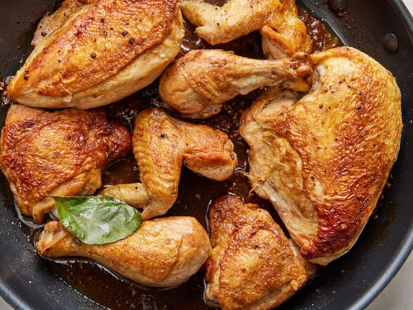

Classic Chicken Adobo

Description
Classic chicken adobo is a savory Filipino dish with tender chicken simmered in a tangy soy-vinegar sauce, infused with
garlic and bay leaves. Perfectly balanced, it's a flavorful comfort food enjoyed at family gatherings and special
occasions.
Ingredients
- 2 chicken thighs, bone-in and skin-on
- 1/2 cup soy sauce
- 1/2 cup vinegar (preferably cane vinegar)
- 1 cup water
- 4 cloves garlic, crushed
- 1 bay leaf
- 1/2 tsp whole peppercorns
- 1 tbsp cooking oil
- 1 tbsp brown sugar (optional, for a slightly sweet flavor)
- Steamed rice, for serving
Steps
- Marinate the Chicken:
- In a bowl, combine soy sauce, vinegar, garlic, bay leaf, and peppercorns. Mix well.
- Place the chicken thighs in the marinade, ensuring they are well coated. Marinate for at least 30 minutes, or ideally,
overnight in the refrigerator for deeper flavor.
- Cooking the Adobo:
- Heat oil in a pan over medium-high heat.
- Remove the chicken from the marinade, reserving the marinade.
- Sear the chicken thighs, skin-side down first, until golden brown, about 3-4 minutes per side. Set aside.
- Making the Sauce:
- In the same pan, pour in the reserved marinade and water. Bring to a boil.
- Add brown sugar (if using) to balance the flavors.
- Reduce heat to low and return the chicken thighs to the pan, skin-side up.
- Cover and simmer for 30-40 minutes, or until the chicken is tender and cooked through, and the sauce has reduced and
thickened slightly. Stir occasionally.
- Final Steps:
- Adjust seasoning with salt and pepper if needed.
- Serve hot over steamed rice. Garnish with chopped green onions or fried garlic flakes if desired.